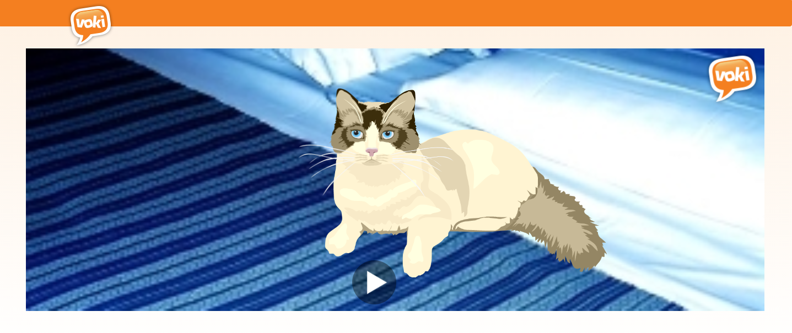
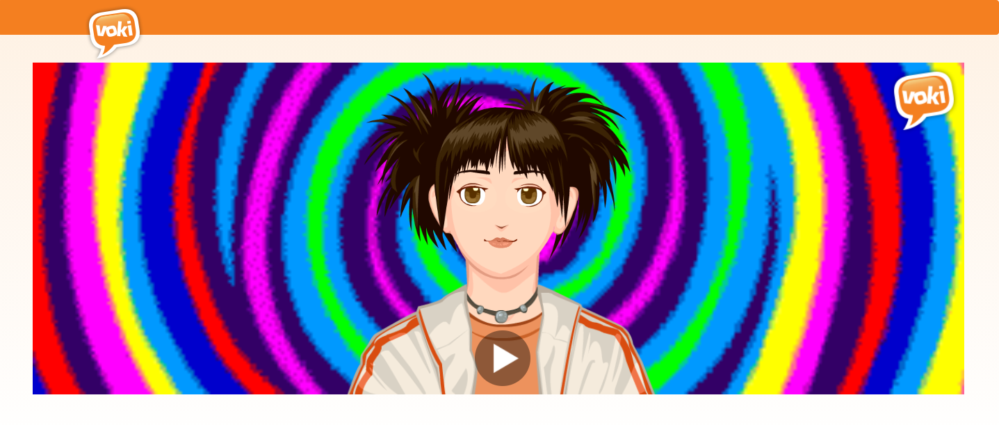
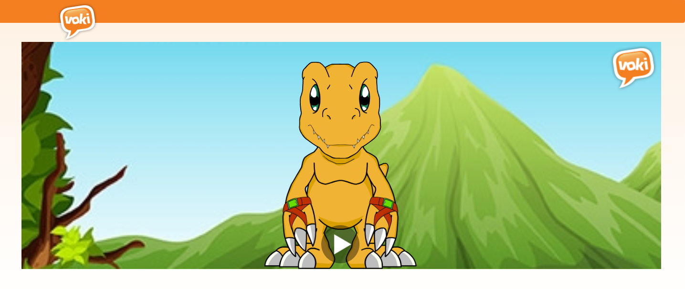
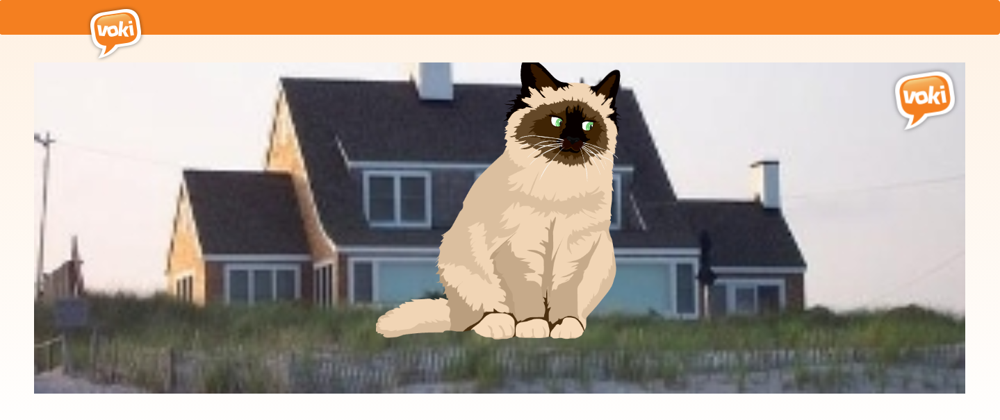

En la unidad de Inglés II se realizó individualmente una grabación de voz
en la plataforma Voki, utilizando el pasado simple para redactar una biografía o autobiografía:
By Alcántara Pérez Diego
By Hernández Favela Ikram Valeria
By Olvera Guadarrama Saúl Isaac
By Saldívar Ángeles Andrea Rosana